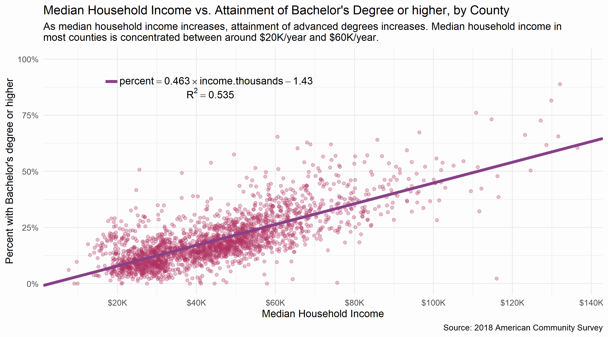

Description: Visualizing the effects of racial inequality in the United States by comparing income, education, and incarceration between white and black populations.
Technologies: R, tidyverse, tinycensus.
Sources: US Census Bureau, US Dep. of Justice Bureau of Justice Statistics
Created: July 2020
Note: I use the term "black" to describe African-Americans. Given recent debates, I hope that this terminology is not taken as inflammatory.
I. Incarceration
The United States has the largest population of incarcerated people of any nation in the world.1 The incarceration rate, while declining for well over a decade, remains higher than in any other country.
However, the overall rate, declining or not, does not paint an accurate picture of race and incarceration in the United States. Blacks and whites face vastly different incarceration rates today, with the black rate nearly six times higher than the white rate.
From 2008 to 2018, the incarceration rate for blacks decreased by 31.6%, while the rate for whites decreased by 15.2%. Notice the scales on the two graphs above: the data for the national rate on the first graph is identical to the data for the national rate on the second graph (minus data from 1978 to 2007).
II. Income and Wealth
Home ownership is often touted as an effective means of building wealth and establishing financial stability. Home ownership rates have risen and fallen over the last 25 years, peaking for both blacks and whites around 2004. The rates follow the same overall trends, however home ownership among blacks is far lower than whites, and little progress has been made in closing the gap since the mid-90's. As a result of this disparity, far fewer black Americans are able to utilize the financial benefits of home ownership.
In addition to differences in home ownership rates, there are significant differences in income between blacks and whites. Comparing black and white Americans by income bracket shows that there are greater concentrations of whites than blacks in higher income brackets. 45% of black households in the US have an income below $35K per year. Only 27% of white households are in this category. In contrast, nearly 30% of white households make more than $100K per year. Only 15% of black household incomes (half the rate of whites) are at this level.
Of course, the difference between incomes could be attributed to many factors, like education or work experience. Or maybe black Americans simply live in poorer areas? However, comparing median household income by race and county shows that even within the same counties (and at every income level), white households have higher incomes than black households.
The "Ideal" line is the line y = x. If race was not a factor in determining the median household income of a county, then each point on the graph would fall on or near this line. For example, if the median household income for blacks was $75K/year, the median household income for whites would be the same, $75K. While there would still be relatively richer and poorer counties, being black or white would not change your income.
The line of best fit shows the true relationship between black median household income and white median household income: the shift of the line above the "Ideal" line means that in most counties, the median household income for whites is higher than for blacks. In fact, of the 1,144 counties with data for both racial groups (and a black population at least 5% the size of the white population), median household income is higher for whites than black in 1,107 counties (96.8%). 10 of the 37 counties where median household income is higher for blacks are in Puerto Rico.
This is, in my opinion, the most important graph I've included here.
III. Education
In 1994, former Vice President Al Gore said, "We cannot tolerate - nor in the long run can this nation afford - a society in which some children become fully educated and others do not; nor can we tolerate a society in which some adults have access to training and lifetime education, and others do not."
Unfortunately, the 26 years since Vice President Gore's speech have not brought equal educational attainment to the United States. While roughly one in three white males and females attain a Bachelor's degree or higher, fewer than one in four black females and fewer than one in five black males attain a Bachelor's degree or higher.
Educational attainment is much more interesting when income is factored in: below, median household income vs. attainment of a Bachelor's degree or higher, by county and race. There is a different point for black and white populations for each county, but the different racial groups are not color coded yet. There is a clear positive relationship between income and educational attainment, but notice how most data is clumped in the area between ~$20K/year and ~$60K/year.
By changing the x-axis from median household income to a ranking of median household income, the data can be distributed more evenly. Below, percentile ranking of median household income vs. attainment of a Bachelor's degree or higher. A ranking of 50% corresponds to a county that has a higher median household income than 50% of the included counties. Percentile ranking is explained further (and animated!) here.
The following graphs shows the relationships between median household income and various levels of educational attainment, including only the data for blacks. There seems to be a positive relationship between higher incomes and higher educational attainment, shown by increasing attainment of 'Bachelor's degree or higher' and decreasing rates of 'High school graduate' and 'Less than high school diploma,' though these relationships are statistically not very strong. R-squared values for linear models of the below relationships, clockwise from top left, are approximately the following: 0.386, 0.121, 0.279, 0.181. Changing the independent variable from income ranking to income results in R-squared values within around 0.02 of the above for each educational level.
The vertical line on each of the graphs (at around 42% in the household income rankings) denotes a special boundary: three-quarters of black communities are to the left of this line, having median household incomes at or below around $40K/year. The uneven distribution in income means that while a correlation exists, the vast majority of black communities are yet to reach the benefits of higher income and higher educational attainment.
IV. Conclusions, but not really
There are many questions still to be asked, and many more ways to explore the data . This project was mainly explorational - identifing and presenting interesting correlations or major disparities along racial lines. The difference in home ownership rates, for example, cannot be disputed. It is a disparity that exists across the whole of the United States and one that has not improved in 25 years. I've drawn attention to that disparity here, but I do not intend to be conclusive about the origin of the disparity or the proper way to bring about change. Nothing I've produced here will answer where this disparity came from, or why it exists. Of course, race is a factor that cannot be overlooked, especially given the history of institutionalized racism in the United States. The same applies for incarceration rates: why are incarceration rates so high to begin with? Are white and black populations being charged with the same crimes, and are they given the same sentences? When did inmates first enter the system? How many took plea bargains? What policies or politics are responsible for mass incarceration, and what policy proposals would best reduce imprisonment in the US? These questions are not answered or addressed here, though I wish I had the means and expertise to.
Education is often celebrated as an "engine of social mobility." As someone who was raised in an education-focused family and is now a college student at Harvard, I've been beat over the head with spoon-fed this mantra particularly vigorously. But how true is it? The data seems to support the hypothesis, but does it matter that education raises incomes if the poorest populations don't have access to education? Or if the poorest populations choose not to continue their educations, or attend lower quality schools? How can we expect those at the bottom to climb the ladder when we've removed the bottom rungs? Or is the ladder adequate, free to be climbed by whoever has the determination? I do not intend to hypothesize on the health and accessibility of the metaphorical ladder based on this data, but it is an important consideration in remedying the disparities between racial groups and class groups in the United States.
Perhaps the most important question I've wrestled with throughout this project is where to point responsibility for the trends that appear in the data. The original title of the project was not "racial inequality"; it was "systemic racism." In recent months, especially in the wake of the George Floyd protests and revived conversations around confederate monuments, the term "systemic racism" seems to be in vogue. But to what extent is America a racist system? Clearly, "the system" is not entirely blind to race, and (at least in the data presented here) black Americans are worse off as a result- the data is more than obvious about this much. But who is responsible for the system? At what level of the system are these problems best addressed? Is the system rotten to its core?
What data are we missing? For this project, I pulled mostly from the US Census and the Census Bureau's American Community Survey, along with some data from the US Dept. of Justice's Bureau of Justice Statistics. All of this data was aggregated at some level- usually by county or nationally. In some cases, finer resolution data exists, but is not available. In an attempt to paint a clearer, more interesting picture of incarceration, I tried to access data from the National Corrections Reporting Program, an offender-level dataset that includes not only relevant demographic information, but also criminal history and sentencing information. This data is only available to certain academic researchers in a very specific set of circumstances. For someone like me, working independently from my bedroom (for the curious, no I am not wearing pants), this data is inaccessible. In other cases, the data simply does not exist. What data should we collect to monitor racial equality, and what metrics should we focus on in our quest to create a just system? What are the most important levers to pull on?
Finally, who are the stakeholders? Obviously every day Americans, black and white alike, but who else is interested in these disparities? How does the prison system and its embedded economic incentives interact with the rest of society? How does the financial system influence home ownership rates? How does middle school funding or access to pre-K affect college graduation rates? But most importantly, who is interested in maintaining these disparities? What can we do to undermine their work? My single conclusion from this project, and I can say this with incredible confidence, is that none of this is accidental. The data looks the way it does - the system is the way it is - because there are powerful people with a vested interest in keeping it that way.
I do believe that change is coming, however slowly.
Appendix
I. Percentile Ranking
This gif shows the transformation of data from its original distribution on the x-axis to a distribution based on percentile ranking on the x-axis (the y-axis is unchanged). The original data is concentrated on the left side of the graph, but after the transformation the data is evenly distributed across the x-axis. Percentile rankings change the data from an absolute comparison to an evenly distributed relative one.

Numerically, an example of percentile ranking looks like this:
| Original data | 1 | 1.1 | 2 | 3 | 5 | 5.2 | 5.5 | 20 | 100 |
| Percentile rank | 0.000 | 0.125 | 0.250 | 0.375 | 0.500 | 0.625 | 0.750 | 0.875 | 1.000 |
Another way of thinking about percentile rank is by converting the number to an actual percentage. In the example above, the percentile ranking of the 5.2 is 0.625, or 62.5%. 5.2 is greater than 62.5% of the data in the rankings- there are 8 other values, and 5.2 is larger than 5 of the 8. Notice how the actual values and the distance between them do not matter, only their size relative to each other.
I worked pretty hard on this project. Thanks for reading this far!
return to Education section